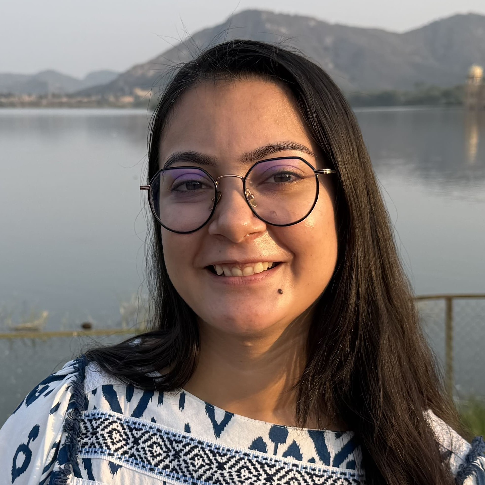

Department of Biosciences and Bioengineering
Indian Institute of Technology Jammu, J&K, India
Computational biology and bioinformatics researcher investigating cellular heterogeneity, regulatory mechanisms and molecular changes in female reproductive tissues using single-cell multi-omics approaches.
My research focuses on understanding cellular heterogeneity, plasticity, and gene regulation in female reproductive tissues using single-cell multi-omics approaches.
Integrating scRNA-seq and scATAC-seq data to characterize cellular states, chromatin accessibility and transcriptional programs.
Investigating transcription factors, regulatory elements, gene regulatory networks and chromatin interactions underlying cellular states.
Studying molecular changes associated with reproductive aging and disease, with particular interest in the endometrium.
I am particularly interested in how transcriptional, epigenetic, and regulatory mechanisms contribute to changes associated with reproductive aging and disease.
I develop computational pipelines using R and Python. By integrating transcriptomic and chromatin-level information, I aim to identify regulatory elements, transcription factors, and gene regulatory networks (GRNs) that define distinct cellular states.
A major focus of my research is the identification of cell-type-specific intergenic long non-coding RNAs (lncRNAs) and their potential regulatory roles in female reproductive tissues. I further aim to extend these findings toward disease-relevant signatures and in-silico perturbation analyses.
In addition to single-cell multi-omics, I work with other next-generation sequencing datasets, including large-scale genomic data analysis, TCGA, bulk RNA sequencing, dsRIP sequencing, ChIP-seq, alternative splicing and transcriptomic datasets.
Department of Biosciences and Bioengineering, J&K, India.
CGPA: 9.86
Percentage: 83.4%
Percentage: 90.1%
Integrative analysis of single-cell transcriptomic and chromatin accessibility data to investigate cellular states and regulatory programs.
Integration of RNA sequencing, dsRIP and ChIP-seq datasets to investigate RNA regulation and alternative splicing.
Investigation of transcriptional programs and molecular characteristics associated with endometrial cancer subtypes.
2026
2026
2025
Submitted to the Department of Zoology, Central University of Jammu (2021).
Submitted to the Department of Zoology, Central University of Jammu (2024).
Merino, L. G., Subhash, S., Whisenant, D., Gupta, S., Revêchon, G., & Eriksson, M. (2026).
Dysregulated lncRNAs are associated with the progressive arterial phenotype in Hutchinson–Gilford Progeria Syndrome.
GeroScience, 1–20.
View DOI →Barbi, M., Gupta, S., Subhash, S., Gowthaman, D., Katcher, A., Gorman, M., ... & Beyaz, S. (2026).
A comprehensive endometrial cancer organoid biobank reveals subtype-specific transcriptional programs and therapeutic targets.
Cancer Research, 86(7_Supplement), 4853–4853.
View DOI →Gupta, S., Ladol, S. (2024).
The impact of climate change on polar ichthyofauna biodiversity.
Biomarkers in Environmental and Human Health Biomonitoring: An Integrated Perspective , 1st Edition, 215–226.
View DOI →For a detailed overview of my academic background, research experience, projects, publications and skills, please refer to my curriculum vitae.
Download CV